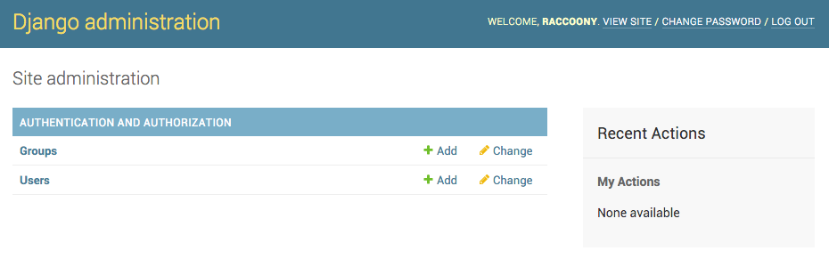
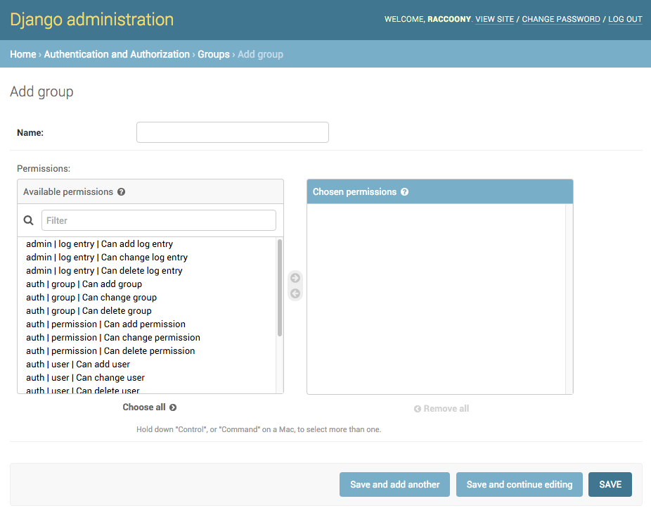

지난 12월 1일, Django 1.9 버전이 출시되었습니다.
파이썬 호환성
Django 1.9는 최소한 파이썬 2.7이 필요하며 파이썬 3.4와 3.5를 지원합니다.
새 기능
on_commit() 훅
데이터베이스 트랜잭션이 성공한 시점을 인식하여 훅을 걸 수 있습니다. 알림용 이메일이나 태스크 큐 생성, 캐시 갱신(invalidating) 등을 용례로 언급했습니다.
참고 링크 : https://docs.djangoproject.com/en/1.9/topics/db/transactions/#django.db.transaction.on_commit
비밀번호 유효성 확인
AUTH_PASSWORD_VALIDATORS라는 설정 값이 생겼습니다. 여기에 유효성 확인용 검사기(validator)를 플러그인처럼 추가하는 방식입니다.
새 프로젝트를 생성하면 기본적으로 다음의 검사기들이 추가됩니다.
- UserAttributeSimilarityValidator : 사용자의 아이디나 이메일 같은 속성들과 비슷한 비밀번호인지 검사
- MinimumLengthValidator : 비밀번호의 최소 길이보다 짧은지 검사
- CommonPasswordValidator : 흔한 문자열(password 같은)인지 검사
- NumericPasswordValidator : 숫자로만 구성되어 있는지 검사
참고 링크 : https://docs.djangoproject.com/en/1.9/topics/auth/passwords/#password-validation
클래스 기반 뷰에 Permission 믹스인 적용
클래스 기반 뷰에서 접근 권한을 제어할 수 있도록 AccessMixin, LoginRequiredMixin, PermissionRequireMixin, UserPassesTestMixin 을 제공합니다. (django-braces 프로젝트에서 영향을 받았다고 합니다.)
참고 링크 : https://docs.djangoproject.com/en/1.9/releases/1.9/#permission-mixins-for-class-based-views
관리자(admin) 페이지 리뉴얼
기능은 막강했지만 인터페이스가 너무 단조로웠던 관리자 페이지가 새 옷을 입었습니다. 플랫한 디자인을 적용했고 아이콘이 SVG 형태로 바뀌어서 HiDPI 스크린에서도 깔끔하게 보이지만, 아쉽게도 모바일 지원은 아직입니다.


병렬 테스트
테스트시 --parallel 옵션을 추가하면 병렬로 실행할 수 있습니다.
참고 링크 : https://docs.djangoproject.com/en/1.9/ref/django-admin/#django-admin-option---parallel
과거 버전과 향후 지원
이번에 출시된 1.9 버전은 2017년 4월까지 업데이트가 지속됩니다. (2017년 4월에 1.11 버전이 출시 예정입니다.)
1.8은 LTS 버전이므로 2018년 4월까지 업데이트가 지속됩니다.
1.7 버전은 1.7.11을 마지막으로 업데이트가 되지 않겠습니다.
다음 번 메이저 업데이트는 1.10 버전이며 2016년 8월에 출시될 예정입니다.